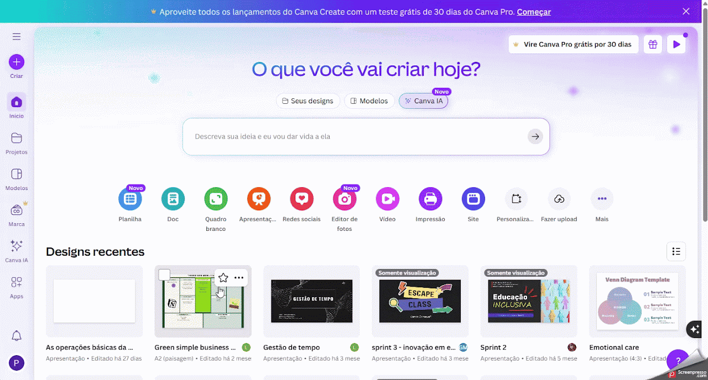
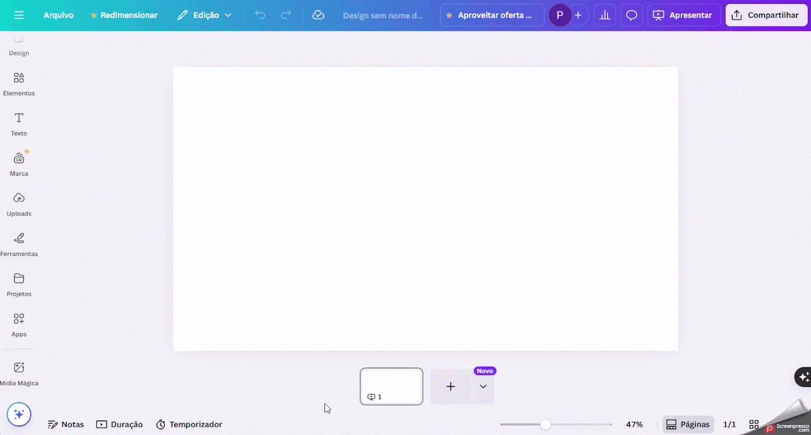
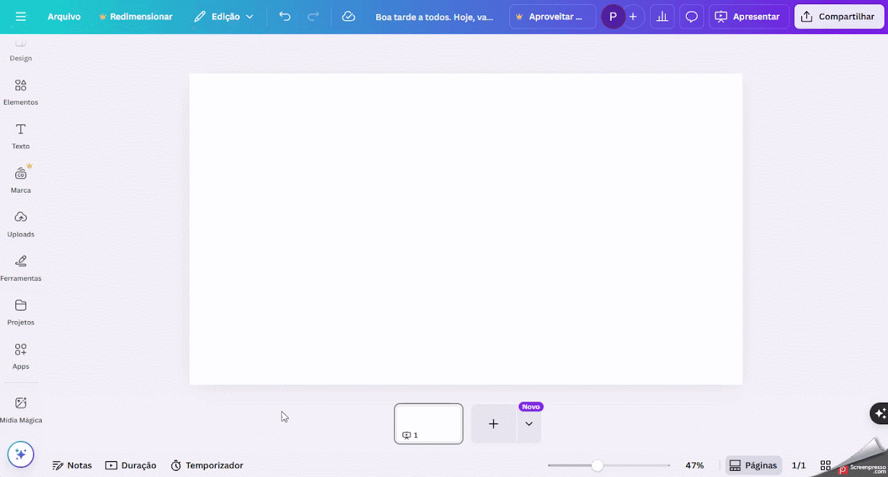
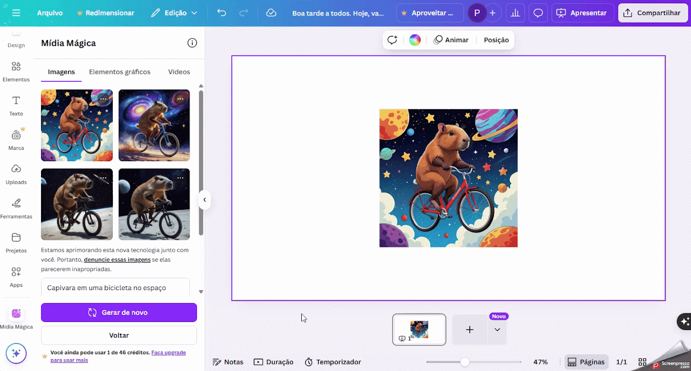

Canva
Criar materiais visuais com IA para apoiar o planejamento de aula e a mediação pedagógica.
Ficha técnica
Visão geral
O que é o Canva?
O Canva é uma plataforma de design gráfico online que agora conta com ferramentas de Inteligência Artificial para facilitar a criação de designs, textos, imagens e apresentações. Essas ferramentas tornam o processo mais rápido, intuitivo e criativo, mesmo para quem não possui experiência em design.
Fluxo de uso
Como utilizar o Canva
Etapa 1
Cadastro
- Acesse o site: https://www.canva.com.
- Clique em “Cadastre-se” no canto superior direito.
- Use um e-mail, conta Google, Facebook ou Apple para se registrar.
- Confirme seu e-mail acessando o link enviado pela plataforma.

Etapa 2
Acessando recursos de IA no Canva
- Após o login, clique em “Criar um design”.
- Selecione o tipo de conteúdo que deseja criar.
- No editor, acesse a opção “Apps” no menu lateral esquerdo.
- Busque por ferramentas com IA como Texto mágico, Mídia mágica, Magic Design, Beat Sync e Magic Eraser.

Etapa 3
Usando o Texto Mágico
- No editor de documentos ou apresentações, vá até a caixa de texto.
- Selecione “Texto Mágico”.
- Digite um comando ou tema.
- O Canva irá gerar automaticamente o texto, que você pode editar livremente.

Etapa 4
Gerando imagens com Mídia Mágica
- Acesse a aba “Apps” e clique em “Magic Media”.
- Escreva uma descrição da imagem que deseja criar.
- A IA irá gerar a imagem baseada no seu comando.
- Adicione a imagem gerada ao seu design com um clique.

Etapa 5
Salvando e compartilhando
- Clique em “Compartilhar” no canto superior direito.
- Escolha entre baixar, compartilhar o link, publicar em redes sociais ou imprimir profissionalmente.

Boas práticas
Dicas adicionais
- Algumas ferramentas de IA estão disponíveis apenas para usuários do plano Pro.
- Acesse a central de ajuda em https://www.canva.com/pt_br/aprenda/ para tutoriais atualizados.
- Use IA para brainstorms criativos, conteúdo para redes sociais, apresentações impactantes e muito mais.